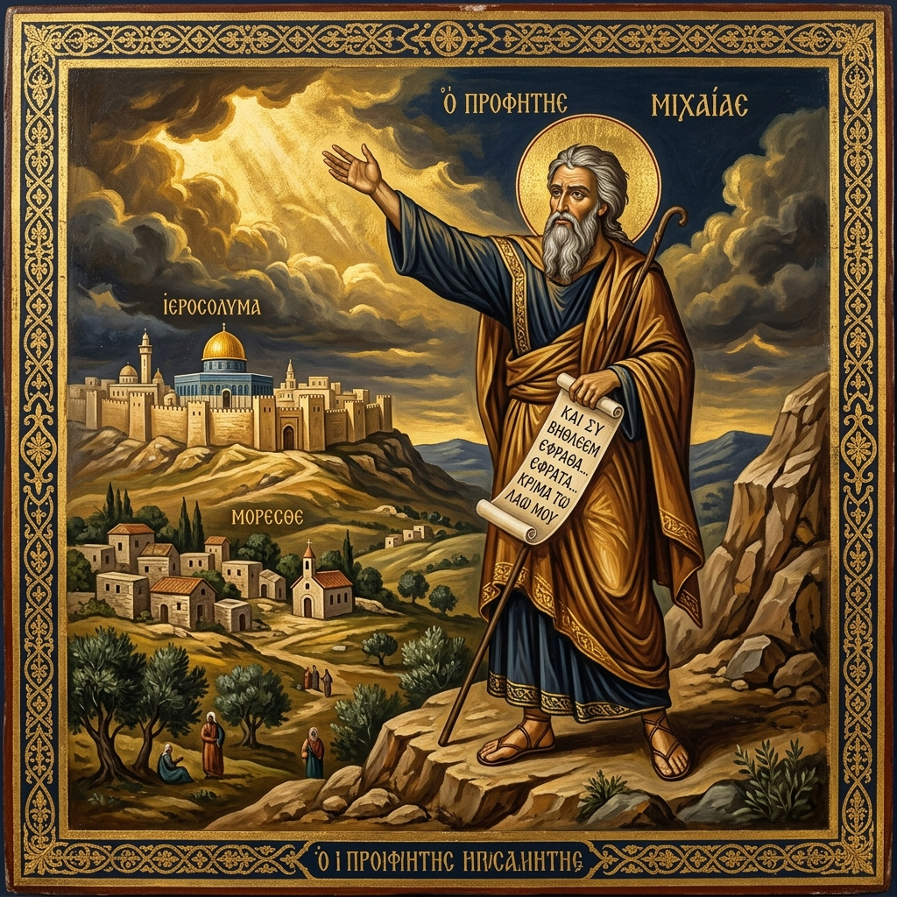
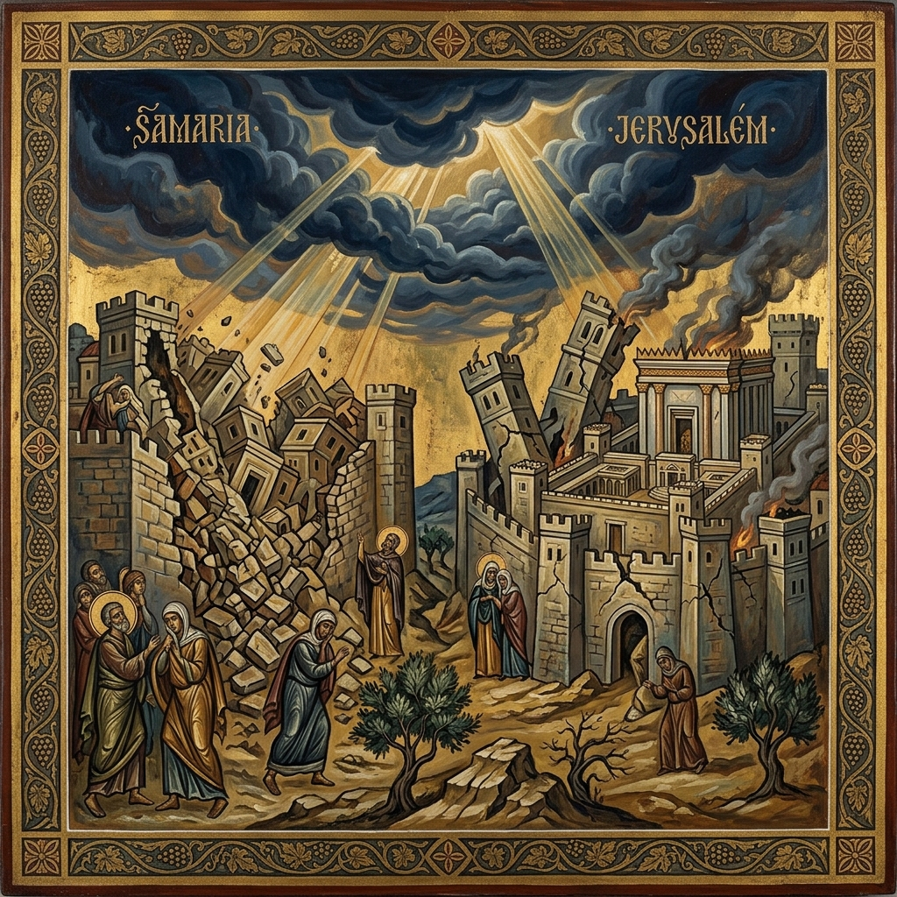
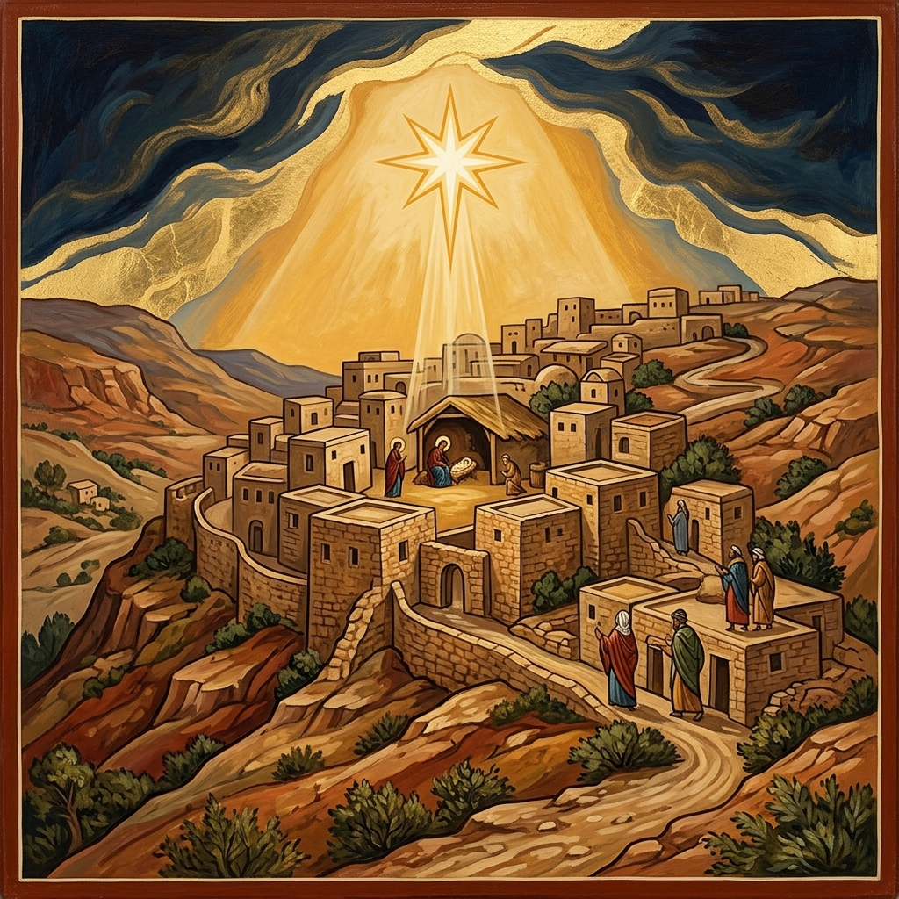
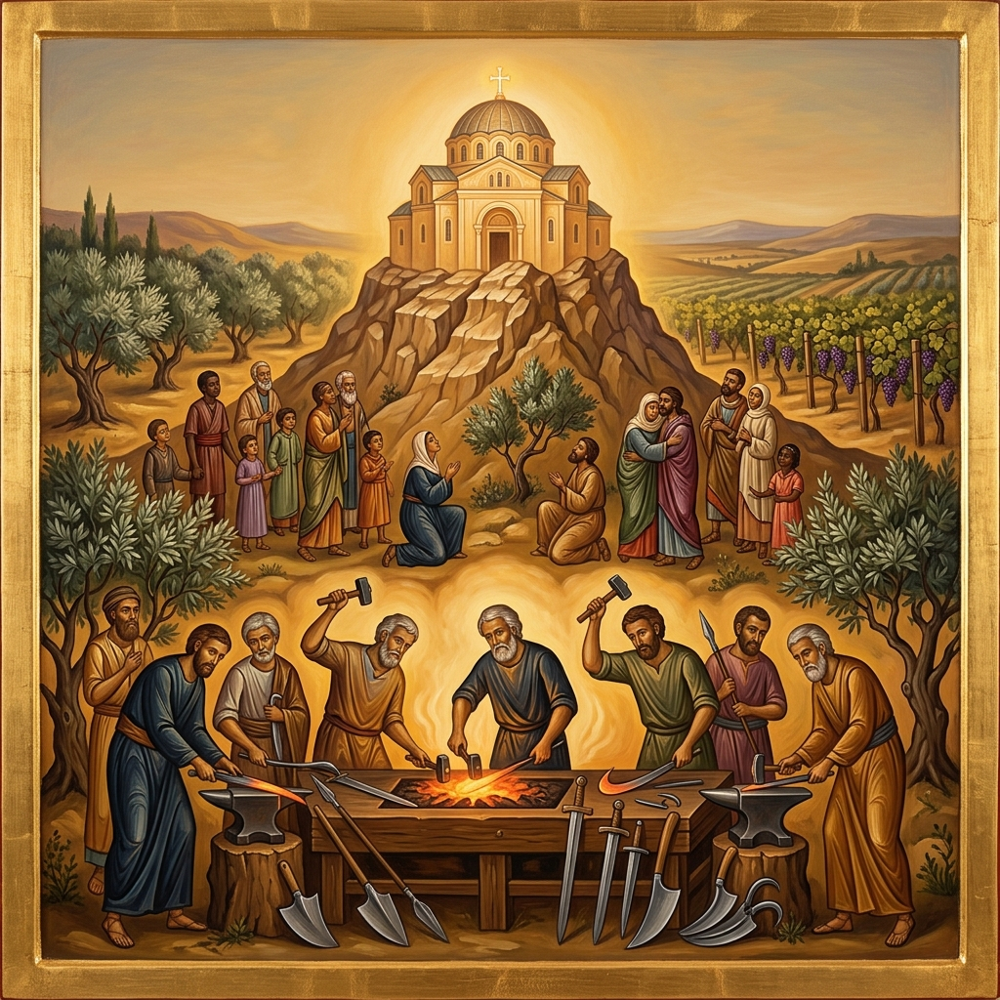
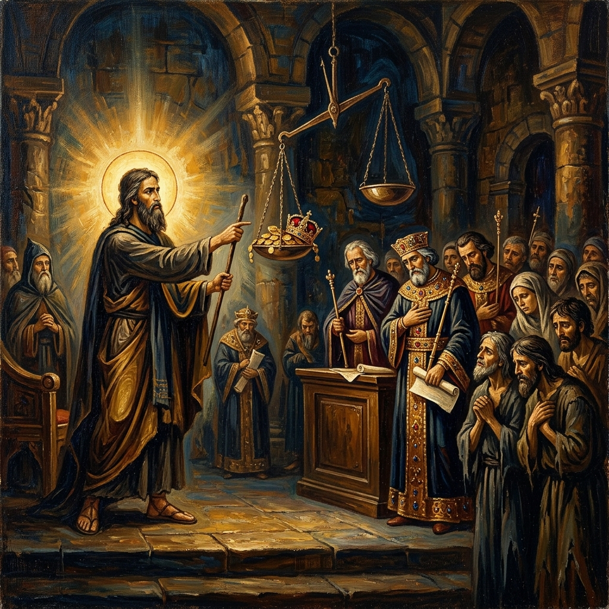
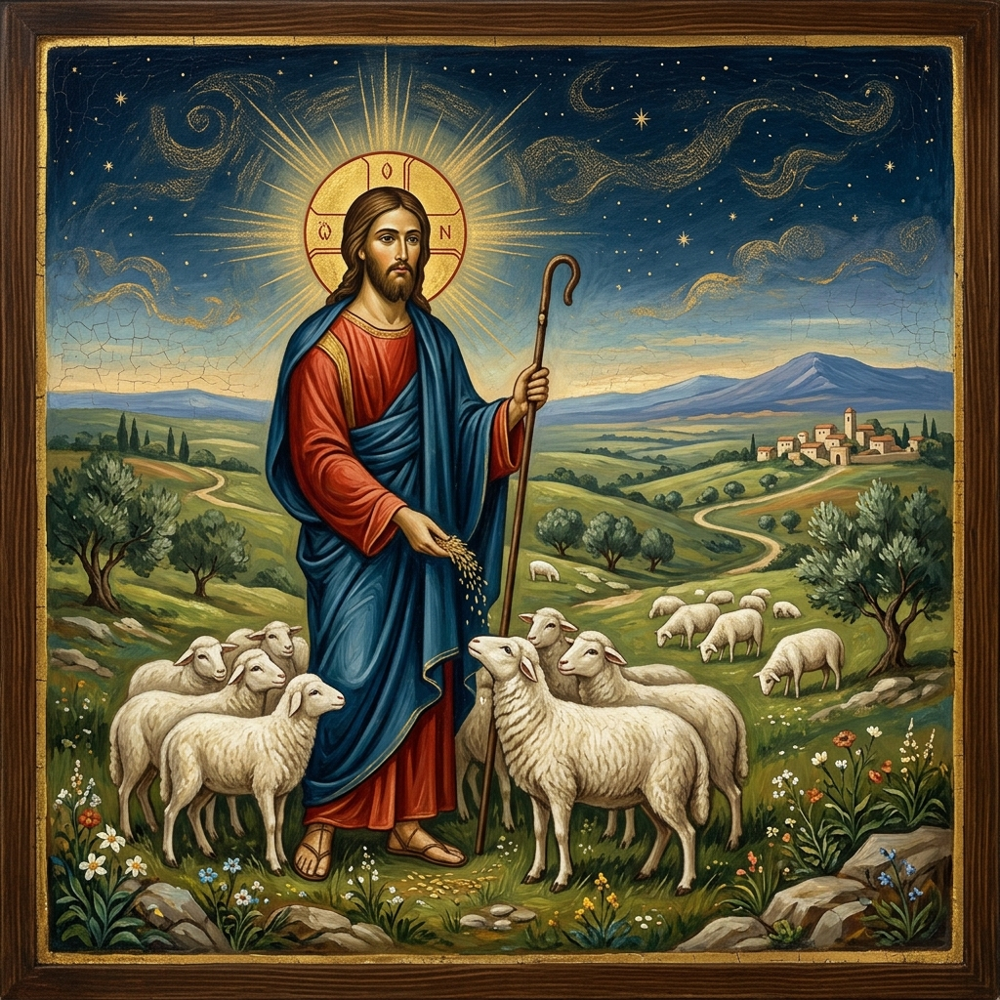
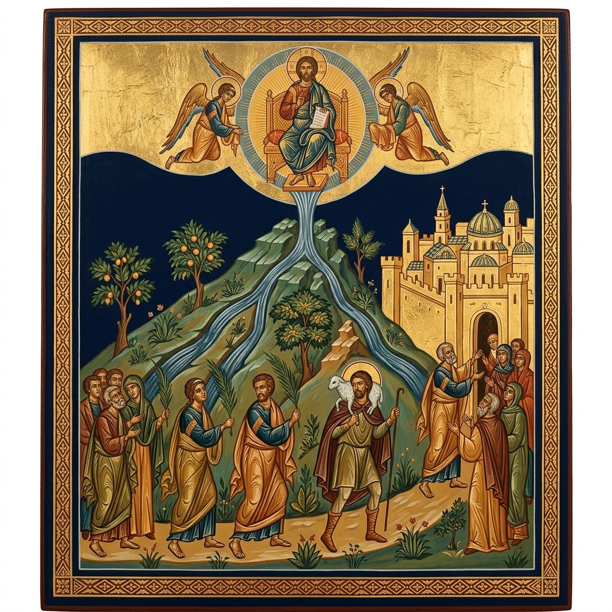

A Coptic Orthodox Study
Chapters 1 — 7
A prophetic cry for justice, a Messianic promise from Bethlehem, and the unfailing mercy of God — explored through the lens of the Church Fathers and the Coptic Orthodox Tradition.
At a Glance
Chapters 1–2
God comes down to judge the idolatry of Samaria and the sins of Jerusalem. Micah laments the coming destruction and denounces the wealthy who seize fields and oppress the poor.
Chapter 3
Leaders who devour God's people, prophets who prophesy for money, and priests who teach for a price. Because of them, "Zion shall be ploughed like a field."
Chapters 4–5
The mountain of the Lord's house shall be exalted. Nations shall beat swords into plowshares. From Bethlehem Ephrathah — a ruler whose origins are "from everlasting."
Chapter 6
God brings a lawsuit against His people, reminding them of His saving acts. He declares what He truly requires: to do justly, love mercy, and walk humbly with your God.
Chapter 7
Micah mourns the moral decay of society, yet declares: "I will look to the LORD; I will wait for the God of my salvation." The book ends with a hymn to God's incomparable mercy and faithfulness.
Prophetic Context

The Prophet Micah
A humble prophet from the village of Moresheth-Gath in Judah, contemporary of Isaiah, Hosea, and Amos. He prophesied during the reigns of Jotham, Ahaz, and Hezekiah.
c. 742–687 BC
Fulfilment of Micah 1:6
"I will make Samaria a heap of ruins in the field" — fulfilled when the Assyrian Empire under Shalmaneser V and Sargon II conquered Israel's capital, ending the Northern Kingdom forever.
722 BCHezekiah's Reform
Micah prophesied that "Zion shall be ploughed like a field" (3:12). King Hezekiah feared the Lord and repented, and the LORD relented. This is cited in Jeremiah 26:18–19 as proof that prophecy can lead to repentance.
c. 715–686 BCSennacherib's Invasion
Sennacherib invaded Judah and besieged Jerusalem, but God delivered the city through angelic intervention (2 Kings 19:35). Micah's call to trust in God was vindicated — the remnant was preserved.
701 BC
Fulfilment of Micah 5:2
"But you, Bethlehem Ephrathah… out of you shall come forth to Me the One to be Ruler in Israel, whose goings forth are from of old, from everlasting." Fulfilled in the Incarnation of our Lord Jesus Christ.
c. 4–2 BC
The Age of the Church
"Nation shall not lift up sword against nation, neither shall they learn war anymore" (4:3). The Fathers see this fulfilled in the peace of the Church — when warring pagans became brothers in Christ through baptism.
From Pentecost to the end of the ageIn-Depth Study
Chapters 1–2
Micah opens with a theophany — God Himself comes down from His holy temple, treading upon the high places of the earth. The mountains melt under Him and the valleys split "like wax before the fire." Samaria is condemned for its idolatry: "I will make Samaria a heap of ruins… I will pour down her stones into the valley."
Chapter 2 turns to the sin of social injustice. The powerful covet fields and seize them, taking houses and inheritances from the vulnerable. Micah pronounces woe upon them: "Do not my words do good to him who walks uprightly?" Yet even here, a thread of hope — the LORD promises to gather the remnant of Israel "like sheep in a fold" (2:12).
"For behold, the LORD is coming out of His place; He will come down and tread on the high places of the earth. The mountains will melt under Him, and the valleys will split like wax before the fire."
Micah 1:3–4
"Woe to those who devise iniquity, and work out evil on their beds! At morning light they practice it, because it is in the power of their hand. They covet fields and take them by violence, also houses, and seize them."
Micah 2:1–2
"I will surely assemble all of you, O Jacob, I will surely gather the remnant of Israel; I will put them together like sheep of the fold, like a flock in the midst of their pasture."
Micah 2:12

Chapter 3
The most devastating indictment of leadership in the Old Testament. Micah rebukes the rulers who "hate good and love evil," who tear the skin from the people and eat their flesh. The prophets prophesy for money — "they cry 'Peace!' when their teeth have something to bite." The priests teach for a price.
Yet despite all this corruption, Micah himself stands as a true prophet: "But truly I am full of power by the Spirit of the LORD, and of justice and might, to declare to Jacob his transgression and to Israel his sin." His fearless conclusion: "Zion shall be ploughed like a field, Jerusalem shall become heaps of ruins."
"Her heads judge for a bribe, her priests teach for pay, and her prophets divine for money. Yet they lean on the LORD, and say, 'Is not the LORD among us? No harm can come upon us.'"
Micah 3:11
"But truly I am full of power by the Spirit of the LORD, and of justice and might, to declare to Jacob his transgression and to Israel his sin."
Micah 3:8
"Therefore because of you, Zion shall be ploughed like a field, Jerusalem shall become heaps of ruins, and the mountain of the temple like the bare hills of the forest."
Micah 3:12
Chapters 4–5
After the darkness of judgement, Micah's vision bursts into glorious light. "In the latter days" the mountain of the Lord's house shall be exalted above the hills, and all nations shall stream to it. God shall judge between many peoples — they shall beat their swords into plowshares and their spears into pruning hooks.
Chapter 5 contains the most celebrated Messianic prophecy in the Minor Prophets: from Bethlehem Ephrathah, the smallest among Judah's clans, shall come forth "the One to be Ruler in Israel, whose goings forth are from of old, from everlasting." The Coptic Orthodox Church, following the Fathers, identifies this as a clear declaration of the eternal divine nature of Christ — born in time in Bethlehem, yet existing from before all ages.
"They shall beat their swords into plowshares, and their spears into pruning hooks; nation shall not lift up sword against nation, neither shall they learn war anymore. But everyone shall sit under his vine and under his fig tree, and no one shall make them afraid."
Micah 4:3–4
"But you, Bethlehem Ephrathah, though you are little among the thousands of Judah, yet out of you shall come forth to Me the One to be Ruler in Israel, whose goings forth are from of old, from everlasting."
Micah 5:2
"And He shall stand and feed His flock in the strength of the LORD, in the majesty of the name of the LORD His God; and they shall abide, for now He shall be great to the ends of the earth."
Micah 5:4
Messianic Fulfilment
This single verse contains the birthplace, mission, and eternal nature of the Messiah. It was quoted by the chief priests and scribes to King Herod (Matthew 2:5–6) and is central to the Church's Christological witness.
"But you, Bethlehem Ephrathah, though you are little among the thousands of Judah, yet out of you shall come forth to Me the One to be Ruler in Israel, whose goings forth are from of old, from everlasting."
Micah 5:2
The humble village of David's lineage, distinguished from Bethlehem of Zebulun. God chose the smallest place to bring forth the greatest King — "that no flesh should glory in His presence" (1 Corinthians 1:29). Fulfilled: Luke 2:4–7.
Not a political ruler, but the Good Shepherd who "shall stand and feed His flock in the strength of the LORD" (5:4). Christ rules as King of kings through self-giving love, not worldly force. Fulfilled: Matthew 2:6, John 10:11.
His "goings forth are from of old, from everlasting" — the Hebrew מִימֵי עוֹלָם (mimei olam) signifies the eternal pre-existence of the Son. He is not merely a man born in Bethlehem; He is the eternal Logos who was with God from the beginning. Cf. John 1:1.
"And you, Bethlehem, in the land of Judah, are not the least among the rulers of Judah; for out of you shall come a Ruler who will shepherd My people Israel."
Matthew 2:6 (citing Micah 5:2)
The Coptic Church, following St. Athanasius, St. Cyril of Alexandria, and the patristic consensus, teaches that Micah 5:2 is an unmistakable prophecy of the Incarnation. The phrase "from everlasting" (mimei olam) declares the eternal generation of the Son from the Father — He is born in time in Bethlehem, yet begotten before all ages from the Father. This is why the Nicene Creed confesses: "Begotten of the Father before all ages… who came down from heaven and was incarnate." Micah 5:2 stands as one of the most direct Old Testament witnesses to the divinity of Christ.

Chapter 6
God summons the mountains and the hills as witnesses in a divine lawsuit (rîb) against His own people. He recounts His saving acts: the Exodus, the leadership of Moses, Aaron, and Miriam, the deliverance from Balak and Balaam. "O My people, what have I done to you? And how have I wearied you? Testify against Me."
The people ask what they should bring — burnt offerings? Thousands of rams? Their firstborn? God's answer cuts through all ritualism to the heart: "He has shown you, O man, what is good; and what does the LORD require of you but to do justly, to love mercy, and to walk humbly with your God?" — perhaps the most famous verse in the Minor Prophets.
"O My people, what have I done to you? And how have I wearied you? Testify against Me. For I brought you up from the land of Egypt, I redeemed you from the house of bondage."
Micah 6:3–4
"He has shown you, O man, what is good; and what does the LORD require of you but to do justly, to love mercy, and to walk humbly with your God?"
Micah 6:8
The Heart of the Law
Micah 6:8 distills the entire Law and Prophets into three divine requirements — a verse that the Church Fathers see fulfilled perfectly in Christ and expected of every believer:
"He has shown you, O man, what is good; and what does the LORD require of you but to do justly, to love mercy, and to walk humbly with your God?"
Micah 6:8
עֲשׂוֹת מִשְׁפָּט (asot mishpat) — to practise righteousness and justice in all dealings. Not mere fairness, but active defence of the oppressed, the orphan, and the widow. Christ fulfilled this perfectly: "He will bring forth justice to the Gentiles" (Isaiah 42:1).
אַהֲבַת חֶסֶד (ahavat chesed) — to love steadfast, covenantal kindness. Not occasional charity, but a heart that delights in mercy as God delights in it. "I desire mercy and not sacrifice" (Hosea 6:6; Matthew 9:13).
הַצְנֵעַ לֶכֶת עִם־אֱלֹהֶיךָ (hatznea lechet im elohecha) — a modest, hidden, intimate walk with God. Not outward religiosity, but an inner life of prayer, obedience, and trust — the way of the saints and the Desert Fathers.
The Coptic Church reads Micah 6:8 as the summary of true worship. It is cited frequently in Coptic sermons and catechesis as a corrective against empty ritualism. Fr. Tadros Y. Malaty writes that these three requirements correspond to our relationship with our neighbour (justice), our inner disposition (mercy), and our relationship with God (humble walking). They find their ultimate fulfilment in Christ, who is Justice incarnate, Mercy embodied, and the humble Servant who washed His disciples' feet.

Chapter 7
The final chapter begins with Micah's personal lament: "Woe is me!" — the godly have perished from the earth, no one can be trusted, treachery reigns even within families. Yet from this darkness rises one of the most profound confessions of faith in the Old Testament: "Therefore I will look to the LORD; I will wait for the God of my salvation; my God will hear me."
The book concludes with a sublime hymn of praise to God's mercy (7:18–20): "Who is a God like You, pardoning iniquity?" — a wordplay on Micah's own name (מִיכָה = "Who is like the LORD?"). God will cast all their sins into the depths of the sea, and fulfil His oath to Abraham. The Fathers see this as a prophecy of baptism — where sins are drowned and destroyed forever.
"Therefore I will look to the LORD; I will wait for the God of my salvation; my God will hear me."
Micah 7:7
"Who is a God like You, pardoning iniquity and passing over the transgression of the remnant of His heritage? He does not retain His anger forever, because He delights in mercy."
Micah 7:18
"He will again have compassion on us, and will subdue our iniquities. You will cast all our sins into the depths of the sea."
Micah 7:19
"You will give truth to Jacob and mercy to Abraham, which You have sworn to our fathers from days of old."
Micah 7:20
Comparative Reference
| Theme | Chapters | Key Verse | Fulfilment in Christ |
|---|---|---|---|
| Divine Judgement | 1–3 | "The LORD is coming out of His place" (1:3) | Christ the Judge (Matthew 25:31–46) |
| Social Justice | 2, 3, 6 | "Woe to those who devise iniquity" (2:1) | Christ's defence of the poor (Luke 4:18) |
| False Leaders | 3 | "Her heads judge for a bribe" (3:11) | Christ the True Shepherd (John 10:11) |
| Messianic Peace | 4 | "Swords into plowshares" (4:3) | "Peace I leave with you" (John 14:27) |
| Bethlehem Prophecy | 5 | "From everlasting" (5:2) | Birth of Christ (Matthew 2:1–6) |
| God's Requirements | 6 | "Do justly, love mercy, walk humbly" (6:8) | Christ's life as perfect example |
| Incomparable Mercy | 7 | "Who is a God like You?" (7:18) | Forgiveness through baptism & the Cross |
Patristic Witnesses
"Bethlehem is called 'small among the thousands of Judah,' yet from it came forth the One whose goings forth are from everlasting. For He who was born in time as man, is the same who, as God, exists before all time and is co-eternal with the Father."
— Commentary on the Twelve Prophets, on Micah 5:2
"This passage concerning Bethlehem is so clear that even the Jews acknowledged it as a prophecy of Christ."
— Commentary on Micah, on 5:2
"When God says 'What does the LORD require of you?' He shows that the whole of virtue is summed up in these three: justice, mercy, and humility. Justice toward our neighbour, mercy in our inner disposition, and humility in our walk before God."
— Homilies on the Gospel of Matthew, Homily 34
"The prophets foretold not only the time and manner of the Saviour's coming, but even the place. Micah says: 'And you, Bethlehem, house of Ephrathah, are few in number among the thousands of Judah; out of you shall come forth for Me the One who is to be Ruler in Israel, and His goings forth are from the beginning, from the days of eternity.'"
— On the Incarnation, §33
"The name Micah means 'Who is like the LORD?' This question is the theme of the whole book. It is answered in the final verses: 'Who is a God like You, pardoning iniquity?' No one is like our God — He alone forgives, He alone restores, He alone casts our sins into the depths of the sea."
— Commentary on the Book of Micah, Introduction
"And hear how it was foretold that He should be born in Bethlehem. Micah the prophet said: 'And you, Bethlehem, land of Judah, are by no means least among the leaders of Judah; for from you shall come a Leader who will shepherd My people Israel.' Now there is a village in the land of the Jews, thirty-five stadia from Jerusalem, in which Jesus Christ was born."
— First Apology, Chapter 34